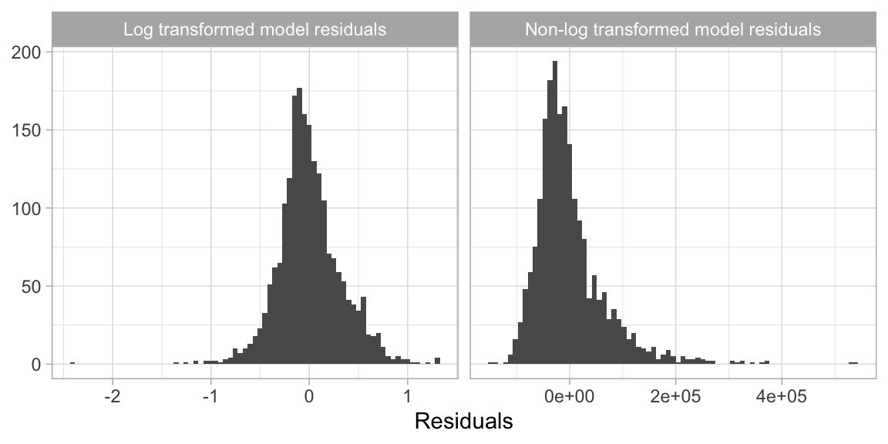
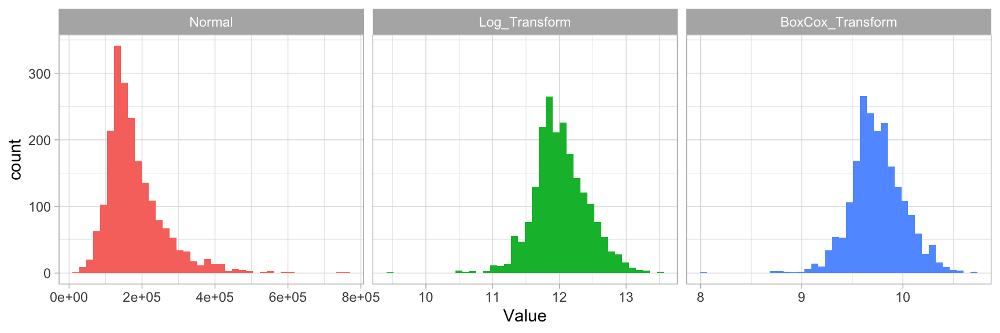

Feature & Target Engineering¶
Data pre-processing and engineering techniques generally refer to the addition, deletion, or transformation of data. The time spent on identifying data engineering needs can be significant and requires you to spend substantial time understanding your data…or as Leo Breiman said “live with your data before you plunge into modeling” [B+01]. Although this book primarily focuses on applying machine learning algorithms, feature engineering can make or break an algorithm’s predictive ability and deserves your continued focus and education.
We will not cover all the potential ways of implementing feature engineering; however, we’ll cover several fundamental pre-processing tasks that has the potential to significantly improve modeling performance. Moreover, different models have different sensitivities to the type of target and feature values in the model and we will try to highlight some of these concerns. For more in depth coverage of feature engineering, please refer to [KJ19] and [ZC18].
Learning objectives¶
By the end of this module you will know:
When and how to transform the response variable (“target engineering”).
How to identify and deal with missing values.
When to filter unnecessary features.
Common ways to transform numeric and categorical features.
How to apply dimension reduction.
How to properly combine multiple pre-processing steps into the modeling process.
Prerequisites¶
# Helper packages
import missingno as msno
import modeldata
import numpy as np
import pandas as pd
from plotnine import *
# Modeling pre-processing with scikit-learn functionality
from sklearn.model_selection import train_test_split
from sklearn.compose import TransformedTargetRegressor
from sklearn.compose import ColumnTransformer
from sklearn.compose import make_column_selector as selector
from sklearn.preprocessing import PowerTransformer
from sklearn.preprocessing import StandardScaler
from sklearn.preprocessing import OneHotEncoder
from sklearn.preprocessing import LabelEncoder
from sklearn.impute import SimpleImputer
from sklearn.impute import KNNImputer
from sklearn.feature_selection import VarianceThreshold
from sklearn.decomposition import PCA
# Modeling pre-processing with non-scikit-learn packages
from category_encoders.ordinal import OrdinalEncoder
from feature_engine.encoding import RareLabelEncoder
# Modeling
from sklearn.model_selection import GridSearchCV
from sklearn.model_selection import KFold
from sklearn.neighbors import KNeighborsRegressor
from sklearn.pipeline import Pipeline
# Ames housing data
ames = modeldata.load_dataset("ames")
# create train/test split
train, test = train_test_split(ames, train_size=0.7, random_state=123)
# separate features from labels and only use numeric features
X_train = train.drop("Sale_Price", axis=1)
y_train = train[["Sale_Price"]]
Target engineering¶
Although not always a requirement, transforming the response variable can lead to predictive improvement, especially with parametric models which require that certain assumptions about the model be met. For instance, ordinary linear regression models assume that the prediction errors (and hence the response) are normally distributed. This is usually fine, except when the prediction target has heavy tails (i.e., outliers) or is skewed in one direction or the other. In these cases, the normality assumption likely does not hold. For example, as we saw in the data splitting section in the last module, the response variable for the Ames housing data (Sale_Price) is right (or positively) skewed ranging from $12,789 to $755,000. A simple linear model, say \(\text{Sale_Price}=\beta_{0} + \beta_{1} \text{Year_Built} + \epsilon\), often assumes the error term \(\epsilon\) (and hence Sale_Price) is normally distributed; fortunately, a simple log (or similar) transformation of the response can often help alleviate this concern as the below plot illustrates.

Furthermore, using a log (or other) transformation to minimize the response skewness can be used for shaping the business problem as well. For example, in the House Prices: Advanced Regression Techniques Kaggle competition, which used the Ames housing data, the competition focused on using a log transformed Sale Price response because “…taking logs means that errors in predicting expensive houses and cheap houses will affect the result equally.” This would be an alternative to using the root mean squared logarithmic error (RMSLE) loss function as discussed in the last module.
There are three common approaches to help correct for positively skewed target variables:
Normalize with a log transformation. This will transform most right skewed distributions to be approximately normal.
If your response has negative values or zeros then a log transformation will produce
NaNs and-Infs, respectively (you cannot take the logarithm of a negative number). If the nonpositive response values are small (say between -0.99 and 0) then you can apply a small offset such as innumpy.log1p()which adds 1 to the value prior to applying a log transformation. If your data consists of values \(\le -1\), use the Yeo-Johnson transformation instead.(Preferred) Use a Box Cox transformation. A Box Cox transformation is more flexible than (but also includes as a special case) the log transformation and will find an appropriate transformation from a family of power transforms that will transform the variable as close as possible to a normal distribution [BC64, CR81]. At the core of the Box Cox transformation is an exponent, lambda (\(\lambda\)), which varies from -5 to 5. All values of \(\lambda\) are considered and the optimal value for the given data is estimated from the training data; The “optimal value” is the one which results in the best transformation to an approximate normal distribution. The transformation of the response \(Y\) has the form:
Tip
If your response has negative values, the Yeo-Johnson transformation is very similar to the Box-Cox but does not require the input variables to be strictly positive.
Below illustrates that the log transformation and Box Cox transformation both do about equally well in transforming Sale_Price to look more normally distributed.

In Python we use TransformedTargetRegressor() to build a plan for target engineering. This will not return the actual log/box-cox transformed values but, rather, a blueprint to be applied later. In this example we are simply building an object that will apply a Box-Cox transformation to the target variable when we fit our model.
Tip
There is a sklearn.preprocessing.power_transform function that can be applied to immediately transform an array. However, later in this module we’ll discuss the idea of data leakage and how important it is to create isolated pre-processing steps.
tt = TransformedTargetRegressor(transformer=PowerTransformer(method='box-cox'))
tt
TransformedTargetRegressor(transformer=PowerTransformer(method='box-cox'))
Dealing with missingness¶
Data quality is an important issue for any project involving analyzing data. Data quality issues deserve an entire book in their own right, and a good reference is The Quartz guide to bad data. One of the most common data quality concerns you will run into is missing values.
Data can be missing for many different reasons; however, these reasons are usually lumped into two categories: informative missingness [KJ13] and missingness at random [LR14]. Informative missingness implies a structural cause for the missing value that can provide insight in its own right; whether this be deficiencies in how the data was collected or abnormalities in the observational environment. Missingness at random implies that missing values occur independent of the data collection process1.
The category that drives missing values will determine how you handle them. For example, we may give values that are driven by informative missingness their own category (e.g., "None") as their unique value may affect predictive performance. Whereas values that are missing at random may deserve deletion2 or imputation.
Furthermore, different machine learning models handle missingness differently. Most algorithms cannot handle missingness (e.g., generalized linear models and their cousins, neural networks, and support vector machines) and, therefore, require them to be dealt with beforehand. A few models (mainly tree-based), have built-in procedures to deal with missing values. However, since the modeling process involves comparing and contrasting multiple models to identify the optimal one, you will want to handle missing values prior to applying any models so that your algorithms are based on the same data quality assumptions.
Visualizing missing values¶
It is important to understand the distribution of missing values (i.e., NA) in any data set. So far, we have been using a pre-processed version of the Ames housing data set. However, if we use the raw Ames housing data, there are actually r scales::comma(sum(is.na(AmesHousing::ames_raw))) missing values—there is at least one missing value in each row of the original data! Good visualizations can help us understand patterns in the missing data.
ames_raw = pd.read_csv("../data/ames_raw.csv")
# count total missing values
ames_raw.isnull().sum().sum()
13997
Tip
Check out the missingno package to see all the great ways to to visualize missing data!
# can you identify patterns of missing data
# missingness is represented with white
msno.matrix(ames_raw, labels=True, filter="bottom", sort="ascending", n=50)
<AxesSubplot:>
# which features have most missing?
# this chart shows the number of observations so small bars (i.e. Pool QC)
# represent very few observed values (lots of missingness)
msno.bar(ames_raw, labels=True, filter="bottom", sort="ascending", n=50)
<AxesSubplot:>
Imputation¶
Imputation is the process of replacing a missing value with a substituted, “best guess” value. Imputation should be one of the first feature engineering steps you take as it will affect any downstream pre-processing3.
Estimated statistic¶
An elementary approach to imputing missing values for a feature is to compute descriptive statistics such as the mean, median, or mode (for categorical) and use that value to replace NAs. Although computationally efficient, this approach does not consider any other attributes for a given observation when imputing (e.g., a female patient that is 63 inches tall may have her weight imputed as 175 lbs since that is the average weight across all observations which contains 65% males that have an average a height of 70 inches).
An alternative is to use grouped statistics to capture expected values for observations that fall into similar groups. However, this becomes infeasible for larger data sets. Modeling imputation can automate this process for you and the two most common methods include K-nearest neighbor and tree-based imputation, which are discussed next.
However, it is important to remember that imputation should be performed within the resampling process and as your data set gets larger, repeated model-based imputation can compound the computational demands. Thus, you must weigh the pros and cons of the two approaches.
The following code snippet shows how to impute different features with the median value of a given feature.
In Python, the SimpleImputer can be used to apply an imputation to all features. However, if you only want to apply imputation to a subset of features then you would use ColumnTransformer in addition to the SimpleImputer strategy.
Warning
These imputers do not yet perform imputation. At the end of this module we will show you how all these pieces of the feature engineering come together in our ML modeling pipeline.
# median imputation to all features
a = SimpleImputer(strategy='median')
# median imputation to just numeric predictors
b = ColumnTransformer([("num_imp", a, selector(dtype_include="number"))])
# median imputation to 1 or more features
c = ColumnTransformer([("num_imp", a, selector("Gr_Liv_Area"))])
K-nearest neighbor¶
K-nearest neighbor (KNN) imputes values by identifying observations with missing values, then identifying other observations that are most similar based on the other available features, and using the values from these nearest neighbor observations to impute missing values.
We discuss KNN for predictive modeling in a later module; the imputation application works in a similar manner. In KNN imputation, the missing value for a given observation is treated as the targeted response and is predicted based on the average (for quantitative values) or the mode (for qualitative values) of the k nearest neighbors.
As discussed in the KNN modeling module, if all features are quantitative then standard Euclidean distance is commonly used as the distance metric to identify the k neighbors and when there is a mixture of quantitative and qualitative features then Gower’s distance [Gow71] can be used. KNN imputation is best used on small to moderate sized data sets as it becomes computationally burdensome with larger data sets [KJ19].
Tip
As we saw in the last module, k is a tunable hyperparameter. Suggested values for imputation are 5–10 [KJ19].
knn_imp = KNNImputer(n_neighbors=6)
Tip
Read more about Scikit-Learn’s imputation options here.
The plot below illustrates the differences between mean and KNN-based imputation on the raw Ames housing data. The red points represent actual values which were removed and made missing and the blue points represent the imputed values. Estimated statistic imputation methods (i.e. mean, median) merely predict the same value for each observation and can reduce the signal between a feature and the response; whereas KNN imputation procedures tend to maintain the feature distribution and relationship.
from matplotlib import gridspec
from mizani import formatters
import random
import warnings
warnings.filterwarnings('ignore', module='plotnine')
random.seed(123)
sample_index = random.sample(list(ames.index), 50)
# identify actuals
actuals = ames.iloc[sample_index].copy()
p1 = (
ggplot()
+ geom_point(ames, aes(x="Gr_Liv_Area", y="Sale_Price"), alpha=0.1)
+ geom_point(actuals, aes(x="Gr_Liv_Area", y="Sale_Price"), color='red')
+ scale_x_log10(limits=(500, 4000))
+ scale_y_log10(
limits=(50000, 600000),
labels=formatters.currency_format(digits=0, big_mark=',')
)
+ ggtitle("Actual values")
)
# mean imputed
mean_impute = actuals.copy()
mean_impute['Gr_Liv_Area'] = actuals['Gr_Liv_Area'].mean()
p2 = (
ggplot()
+ geom_point(actuals, aes(x="Gr_Liv_Area", y="Sale_Price"), color='red')
+ geom_point(mean_impute, aes(x="Gr_Liv_Area", y="Sale_Price"), color='blue')
+ scale_x_log10(limits=(500, 4000))
+ scale_y_log10(
limits=(50000, 600000),
labels=formatters.currency_format(digits=0, big_mark=',')
)
+ ggtitle("Mean imputation")
)
# knn imputed
knn_imp = KNNImputer(n_neighbors=6)
ames_numeric = ames.select_dtypes(include=[np.number]).copy()
ames_numeric.loc[sample_index, 'Gr_Liv_Area'] = np.nan
knn_impute = knn_imp.fit_transform(ames_numeric)
knn_impute = pd.DataFrame(knn_impute, columns=ames_numeric.columns).iloc[sample_index]
p3 = (
ggplot()
+ geom_point(actuals, aes(x="Gr_Liv_Area", y="Sale_Price"), color='red')
+ geom_point(knn_impute, aes(x="Gr_Liv_Area", y="Sale_Price"), color='blue')
+ scale_x_log10(limits=(500, 4000))
+ scale_y_log10(
limits=(50000, 600000),
labels=formatters.currency_format(digits=0, big_mark=',')
)
+ ggtitle("KNN imputation")
)
# Empty plotnine figure to place the subplots on. Needs junk data (for backend "copy" reasons).
fig = (
ggplot()
+ geom_blank(data=ames)
+ theme_void()
+ theme(figure_size=(15, 3))
# such a hack it's embarrassing!
+ ggtitle((
" " +
"(1) Actual values " +
"(2) Mean imputation " +
"(3) KNN imputation "
))
).draw()
# Create gridspec for adding subpanels to the blank figure
gs = gridspec.GridSpec(1, 3, wspace=0.3)
ax1 = fig.add_subplot(gs[0,0])
ax2 = fig.add_subplot(gs[0,1])
ax3 = fig.add_subplot(gs[0,2])
# Add subplots to the figure
_ = p1._draw_using_figure(fig, [ax1])
_ = p2._draw_using_figure(fig, [ax2])
_ = p3._draw_using_figure(fig, [ax3])
Feature filtering¶
Numeric feature engineering¶
Categorical feature engineering¶
Dimension reduction¶
Proper implementation¶
References¶
- BBBKegl11
James Bergstra, Rémi Bardenet, Yoshua Bengio, and Balázs Kégl. Algorithms for hyper-parameter optimization. Advances in neural information processing systems, 2011.
- BB12
James Bergstra and Yoshua Bengio. Random search for hyper-parameter optimization. Journal of Machine Learning Research, 13(Feb):281–305, 2012.
- BC64
George EP Box and David R Cox. An analysis of transformations. Journal of the Royal Statistical Society. Series B (Methodological), pages 211–252, 1964.
- B+01
Leo Breiman and others. Statistical modeling: the two cultures (with comments and a rejoinder by the author). Statistical Science, 16(3):199–231, 2001.
- CR81
Raymond J Carroll and David Ruppert. On prediction and the power transformation family. Biometrika, 68(3):609–615, 1981.
- CBHK02
Nitesh V Chawla, Kevin W Bowyer, Lawrence O Hall, and W Philip Kegelmeyer. Smote: synthetic minority over-sampling technique. Journal of Artificial Intelligence Research, 16:321–357, 2002.
- DH+97
Anthony Christopher Davison, David Victor Hinkley, and others. Bootstrap Methods and their Application. Volume 1. Cambridge University Press, 1997.
- Efr83
Bradley Efron. Estimating the error rate of a prediction rule: improvement on cross-validation. Journal of the American Statistical Association, 78(382):316–331, 1983.
- ET97
Bradley Efron and Robert Tibshirani. Improvements on cross-validation: the 632+ bootstrap method. Journal of the American Statistical Association, 92(438):548–560, 1997.
- FHT01
Jerome Friedman, Trevor Hastie, and Robert Tibshirani. The Elements of Statistical Learning. Volume 1. Springer Series in Statistics New York, NY, USA:, 2001.
- Gow71
John C Gower. A general coefficient of similarity and some of its properties. Biometrics, pages 857–871, 1971.
- HBM03
Douglas M Hawkins, Subhash C Basak, and Denise Mills. Assessing model fit by cross-validation. Journal of Chemical Information and Computer Sciences, 43(2):579–586, 2003.
- Kim09
Ji-Hyun Kim. Estimating classification error rate: repeated cross-validation, repeated hold-out and bootstrap. Computational Statistics & Data Analysis, 53(11):3735–3745, 2009.
- KJ13
Max Kuhn and Kjell Johnson. Applied Predictive Modeling. Volume 26. Springer, 2013.
- KJ19(1,2,3)
Max Kuhn and Kjell Johnson. Feature Engineering and Selection: A Practical Approach for Predictive Models. Chapman & Hall/CRC, 2019.
- LR14(1,2)
Roderick JA Little and Donald B Rubin. Statistical Analysis with Missing Data. Volume 333. John Wiley & Sons, 2014.
- MSP05
Annette M Molinaro, Richard Simon, and Ruth M Pfeiffer. Prediction error estimation: a comparison of resampling methods. Bioinformatics, 21(15):3301–3307, 2005.
- Wol96
David H Wolpert. The lack of a priori distinctions between learning algorithms. Neural Computation, 8(7):1341–1390, 1996.
- ZC18
Alice Zheng and Amanda Casari. Feature Engineering for Machine Learning: Principles and Techniques for Data Scientists. O'Reilly Media, Inc., 2018.
- 1
[LR14] discuss two different kinds of missingness at random; however, we combine them for simplicity as their nuanced differences are distinguished between the two in practice.
- 2
If your data set is large, deleting missing observations that have missing values at random rarely impacts predictive performance. However, as your data sets get smaller, preserving observations is critical and alternative solutions should be explored.
- 3
For example, standardizing numeric features will include the imputed numeric values in the calculation and one-hot encoding will include the imputed categorical value.